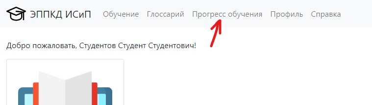
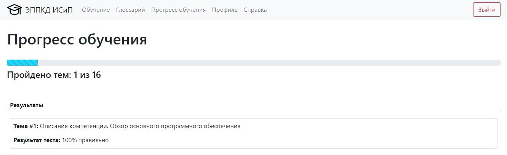

Чтобы просмотреть прогресс обучения, необходимо в навигационном меню выбрать пункт "Прогресс обучения"

Здесь вы можете видеть общее количество тем курса и количество пройденных вами тем (пройденной считается тема, в тесте к которой набран минимальный необходимый процент правильных ответов)

Также здесь вы видите результаты прохождения тестов к каждой из тем.
Как только вы пройдете все темы, вам будет сообщено об успехе на этой странице.